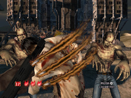
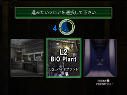

HODIII アーケードモード
モード紹介
今回はHODIIIの“アーケードモード”についてです！
両手で「ショットガン」をしっかり握って、アーケード版をプレイした人も
多いはず！
HOD2の武器は「ハンドガン」でしたが、HODIIIでは「ショットガン」に
変わったため、同じアーケードモードでも、HOD2とは、また一味違った
プレイ感となっています。
また、スコア換算やボーナスライフがもらえる条件などもHOD2とHODIIIで
違っています。「HOD2がクリア出来た！」という方は、以下のポイントを
しっかり読んで、HODIIIにもチャレンジしてください！
【1】スコアを伸ばして、ボーナスライフをゲット
HOD2とHODIIIで大きく違う点の1つとして、HODIIIでは
「ステージクリア時のスコアが一定以上だった場合、ボーナスライフが
ゲットできる」
というものがあります。
ステージクリア時のランクが「Ａ」だった場合は1つ、「S」だった場合は
なんと2つものライフが手に入ります！
ステージ後半まで進むには、ライフがたくさん残っていて欲しいところ。
ぜひランク「Ｓ」を目指してください！
【2】仲間を助けよう
敵に囲まれてしまった仲間を助けた時、（タイムアタックモードでは
ボーナスタイムが）アーケードモードでは、ボーナスライフがもらえます。
仲間を撃ってもミスにはならないので、ミスを恐れず、積極的に周囲の
敵を撃ち、仲間を助けましょう！頭を3発ずつ正確に撃つなど、自分なりの
クリア方法をみつけると良いでしょう。
【3】リロードのタイミングを考えよう
HODIIIの武器はショットガンであり、弾数は6発ですが、攻撃範囲が広く
吹き飛ばす爽快感がウリです。
しかし、ハンドガンが武器だったHOD2に比べて、リロードに時間が
かかります。リロード中はプレイヤーの隙となり、攻撃を受けやすいので、
リロードするタイミングに注意しましょう！
「いつも同じところでダメージを受けちゃうんだよな～」
ということはありませんか？！
そういう場合は、敵を撃つタイミングを少し遅らせるようにしましょう！
撃つタイミングを遅らせると、自然とリロードのタイミングも遅くなります。
敵が攻撃してきた時に弾が残っていれば、リロードをせずに、敵を撃つ
ことができるのです！
特にボスには効果的。どうしてもダメージをうけるときは
「出現と同時に撃たない」
というのも良いかもしれません。

敵が攻撃した時に、リロードにならないように！
【4】得意のルートを見つける
HOD2とはもう1つ違う点。それは、進むルートを自分で選択できるという
点です。選んだルートによって、次に選べるルートも変わり、またどの
順番で選んだかによって、それぞれの難易度も変わってきます。
つまり…
・いろんなルートを試して、自分にあったルートを探す。
・苦手なステージ（ボス戦を含めて）は早めに選ぶようにし、難易度が
易しいうちにクリアしてしまう。
これが、ポイントです！

苦手なステージから先に選ぼう！
HODIIIアーケードモードのコツはつかめましたか？
HOD2と同じく、ゲームオーバーになっても、あきらめずにチャレンジして
みてください！ワタクシも何回か遊んでいるうちにクリアできたときは、
ビックリして、とてもうれしかったものです！
ではまた。
 RSS
RSS